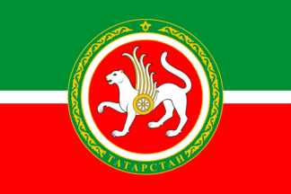
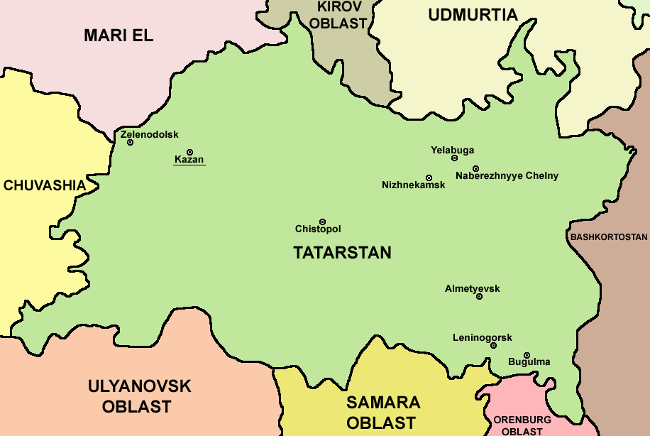
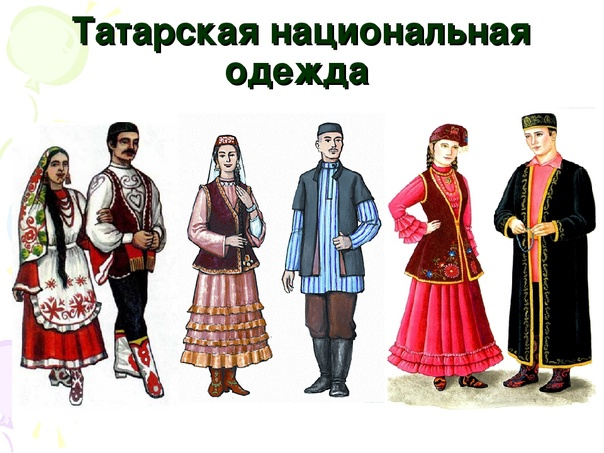

Coğrafya:
Rusya Federasyonu (RF) Tataristan Cumhuriyeti, Volga Federal Bölgesi’nde, Volga ve Kama nehirlerinin kesiştiği yerde kurulu olup Rusya’nın Avrupa’daki ve Asya’daki toprakları arasında bir köprü konumundadır. Yönetim merkezi (başkenti) Kazan, Moskova’nın yaklaşık 800 km. doğusunda yerleşiktir. Tataristan’ın yüzölçümü 67.836 km² olup bölgede karasal iklim görülmektedir.-
Nüfus:
Federal Devlet İstatistik Servisi verilerine göre, Tataristan’ın nüfusu yaklaşık 3,9 milyondur. %77’si (2020) kentlerde yaşayan nüfusun yarıdan fazlasını (%53,2) Tatarlar oluşturmaktadır. Cumhuriyet sınırları içerisinde Tatarların ardından Ruslar gelmekte olup (%39,7) kayda değer sayıda Çuvaş, Mari, Udmurt ve Başkurt yaşamaktadır. -
Tarih:
Halihazırda Tataristan Cumhuriyeti’nin bulunduğu topraklarda 8. yüzyıldan 13. yüzyıla kadar, özellikle Orta Asya, Orta Doğu ve Baltik Denizi kıyılarındaki yerleşim birimleriyle başta kürk ticareti olmak üzere yoğun ticari ilişkilere sahip bir topluluk olan ve 21 Mayıs 922 tarihinde İslamiyet’i kabul eden “Volga Bulgarları” yerleşmişti. 13. yüzyılın başlarında Batu Han komutasındaki Moğol-Türk (Kuman-Kıpçak) ordusu bölgeyi ele geçirerek Altın Orda Devleti’ni kurmuş ve bölgede 15. yüzyıla kadar bu devlet hüküm sürmüştür. Altın Orda Devleti’nin güç kaybetmesinin ardından kurulan Kazan Hanlığı, 1552 yılında Korkunç İvan komutasındaki Rus birlikleri tarafından Rusya Çarlığı’na dahil edilmiştir. 1918-1920 yılları arasında Rusya’daki karışıklık ve iç savaş sırasında bölgede “İdil-Ural Devleti” adı altında bir bağımsız devlet ilân edildiyse de sonradan yönetimi ele geçiren Bolşevikler tarafından Tatar Özerk Sovyet Sosyalist Cumhuriyeti kurulmuştur. SSCB’nin dağılmasıyla birlikte, 30 Ağustos 1990 tarihinde Tataristan bağımsızlığını ilân etmiş ve 1992’de yapılan Anayasa referandumunda halkın %62’si bağımsızlıktan yana oy kullanmıştır. Ancak bu bağımsızlık ilânı Rusya’dan ve uluslararası toplumdan kabul görmemiştir. 15 Şubat 1994 tarihinde Rusya ile Tataristan Cumhuriyeti arasındaki ilişkilerin çerçevesini oluşturan Yetki Paylaşımı Anlaşması imzalanmış ve 24 Temmuz 2007 tarihinde bu anlaşma 10 yıl süreyle tadil edilerek yenilenmiştir. 24 Temmuz 2017 tarihinde süresi dolan anlaşma tekrar uzatılmamıştır. -
Siyasi Yapı:
Federe birim olarak RF Tataristan Cumhuriyeti’nde yürütme erkinin başı, görev süresi dört yıl olan Cumhurbaşkanı’dır1 . Halihazırdaki Cumhurbaşkanı Rustam Minnihanov, 25 Mart 2010 tarihinden bu yana, ilk Cumhurbaşkanı Mintimer Şaymiev’den boşalan görevi yürütmektedir. Bakanlar Kurulu mevcuttur. Başbakan Aleksey Pesoşin 17 Nisan 2017 tarihinden bu yana görevdedir. Devlet Konseyi (Meclis) Tataristan’daki en üst yasama organıdır. Devlet Konseyi, tek dereceli seçimle doğrudan halk tarafından beş yıllık süre için seçilen 100 milletvekilinden oluşmaktadır. Bu milletvekillerinin 50’si dar bölgede çoğunluk esasına göre, 50’si ise siyasi partilerin seçimlerde aldıkları oy oranları çerçevesinde parti listelerinden seçilmektedir.